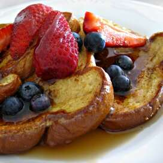

French Toast

French Toast Lovers
For true breakfast lovers, french toast is a must have when one is looking for a fulfilling meal.If you're looking for the best French toast recipe on the internet, you've come to the right place. This tender, fluffy, and indulgent recipe comes together quickly and easily with just five ingredients you already have on hand.
Here's everything you need to know about making the best French toast of your life, including the best bread to use and what ingredients you need.
Ingredients
- 2/3 cup milk
- 2 large eggs
- 1 teaspoon vanilla extract (Optional)
- 1/4 teaspoon ground cinnamon (Optional)
- salt to taste
- 6 thick slices bread
- 1 tablespoon unsalted butter, or more as needed
Steps
- Whisk milk, eggs, vanilla, cinnamon, and salt together in shallow bowl
- Lightly butter a griddle and heat over medium-high heat
- Dunk bread in egg mixture, soaking both sides. Transfer to the hot skillet and cook until golden, 3 to 4 minutes per side. Serve hot.